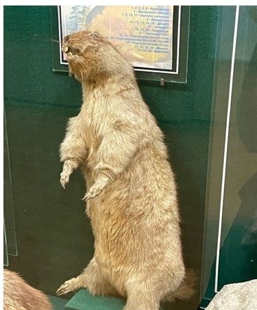

Журнал-путеводитель
Экскурсия по залу природы историко-краеведческого музея Северо-Казахстанской области

О музее
Зал природы краеведческого музея Северного Казахстана. Отдел (сектор) природы Северо-Казахстанского областного историко-краеведческого музея берет свое начало с августа 1923 года, когда было создано «Акмолинское губернское общество по изучению местного края». В распоряжение общества поступили первые экспонаты: от любителя палеонтологии доктора Кузнецова - кости ископаемых животных; от местного союза охотников - чучела промысловых птиц. Также городской больницей была доставлена коллекция спиртовых препаратов по эмбриогенезу человека. 1 января 1924 г. произошло открытие музея.
В 1927 году создан естественно-исторический отдел. В разные годы в фонды музея поступали почвенные монолиты с гербариями, характеризующие растительный покров собранных образцов почв, минералы, чучела животных.
С 1930 - х гг. по настоящее время в фонды сектора природы поступают как уникальные палеонтологические экспонаты, так и ценные зоологические экспонаты редких видов животных нашего края.
Музей – исторически обусловленный многофункциональный институт социальной информации, предназначенный для сохранения культурно-исторических и естественнонаучных ценностей, накопления и распространения информации посредством музейных предметов. Документируя процессы и явления природы и общества, музей комплектует, хранит, исследует коллекции музейных предметов, а также использует их в научных, образовательно-воспитательных и пропагандистских целях.
Рисунки 1,2. Первые экспозиции музея.
Добро пожаловать на нашу экскурсию по залу природы краеведческого музея города Петропавловска!
Начнем мы наш увлекательный рассказ с витрины, где можем наблюдать филина, который поймал зайца-беляка (Рис.3).
Рисунок 3. Витрина филин.
Филин – одна из крупнейших сов птиц, известная своим мощным телосложением, большими глазами и характерными «ушками» из перьев. Эти хищники обладают отличным ночным зрением и бесшумным полетом, что делает их непревзойденными охотниками. Филины обитают в лесах, горах и степях, ведут скрытный образ жизни и могут жить до 20 лет в дикой природе.
Теперь мы плавно переносимся в зал палеонтологий. Здесь мы можем наблюдать древние морские организмы, такие как аммониты, напомнят нам о том, как миллионы лет назад жизнь на Земле выглядела совсем иначе. Также можем наблюдать величественные бивни мамонта, и кости шерстистого носорога — свидетелей ледникового периода (Рис.4).
• Бивни мамонта: 1923г. Окрестности Петропавловска. Поздний плейстоцен;
• Череп шерстистого носорога: 1936 г. Около пос. Борки. Поздний плейстоцен;
• Череп длиннорогого бизона с роговыми стержнями: 1941 г. Около р. Ишим. Поздний плейстоцен;
• Зуб коренной мамонта: 1980 г. В 18 км от г. Сергеевка. Поздний плейстоцен.;
• Правая бедренная кость верблюда:1983 г. Около р. Ишим у с. Берёзовка;
• Рога оленя с частью черепа: II пол. ХХ века. СКО.)

Рисунок 4. Бивни мамонта; Кости шерстистого носорога; Аммонит.
Переходим в зал природы: можно увидеть диораму зимы. Мы с вами переносимся в холодные зимние леса Северо-Казахстанской области. Здесь вы увидите рысь — величественного хищника, а также колонка, маленького и ловкого пушного зверька, который прекрасно приспособился к жизни в условиях суровых зим. Внимательно посмотрите, здесь также обитают белая куропатка и белая сова — оба эти вида идеально маскируются в снежном покрывале (Рис.5).

Рисунок 5. Диорама зима.
Перед нами открывается особый мир, посвященный редким и охраняемым видам животного мира. Здесь представлены сурок-байбак — животное, популяции которого уменьшаются, и краснозобая-казарка — одна из самых красивых и редких мигрирующих видов утиных нашего региона. Особо выделяется беркут. Эти виды внесены в Красную книгу Казахстана, и важно помнить о необходимости их защиты (Рис.6).
Рисунок 6. Витрина Красная книга.
Переходя к следующей диораме, мы оказываемся в начале весны. Этот сезон характеризуется пробуждением природы, когда лес наполняется звуками птиц и других животных. Мы видим бородатую неясыть — ночную хищную птицу, которая ловко охотится на мышей. Здесь же обитают тетерева, которые радуют нас своим пением в период тока, и ушастая сова, которая днем прячется среди деревьев, а в темное время суток начинает свою охоту (Рис.7).

Рисунок 7. Витрина весна.
Перемещаемся дальше — наступает лето. Это время, когда природа наиболее ярко формирует свою полноту и богатство форм среди растений и животных. Здесь вы увидите лося, величественного и мощного оленя, а также барсука из куницевых, который с удовольствием роет свои норы. В степной части диорамы мы видим корсака, а в ветвях деревьев поет иволга. Внимательно присмотритесь — также можно увидеть кукушку, чей характерный крик слышен повсюду в это время года (Рис.8).
Рисунок 8. Диорама лето.
Теперь мы оказываемся в осеннем лесу. Это время, когда природа готовится к зимнему отдыху. Кедровка делает запасы семян кедровой сосны, а енотовидная собака нагуливает жировые запасы. Здесь также можно встретить волка, который хищничает в поисках добычи, и его присутствие делает лес еще более таинственным (Рис.9).
Рисунок 9. Диорама осень.
Витрина, посвященная водным птицам. Здесь представлены околоводные птицы, такие как орлан-белохвост, величественная хищная птица, и кулик турухтан, а также водоплавающие птицы — белолобый гусь и пеганка, которых часто можно встретить в водоемах Северо-Казахстанской области (Рис.10,11,12).

Рисунок-10. Орлан-белохвост.

Рисунок-11. Витрина с турухтанами.
Рисунок-12. Витрина водные птицы.
Далее перед вами витрина, посвящённая куликам — удивительным птицам, обитающим на берегах водоёмов, болотах и лугах. Среди них особенно выделяются два вида: большой кроншнеп и чибис. Большой кроншнеп — самый крупный из них, с длинным загнутым клювом. Он добывает пищу в грунте и перелетает на зиму в тёплые края. Чибис — яркая птица с хохолком. Весной устраивает зрелищные полёты, охраняя свою территорию (Рис.13).
Рисунок-13. Витрина кулики.
Дальше можем наблюдать диораму водоема. Здесь мы видим представителей водного мира. Это речной бобр, который строит свои плотины, дикий кабан, встречающийся в окрестных озерах, а также скопа — хищная птица, ловящая рыбу. Наблюдая за выпью и лебедем кликуном, мы переносимся на берега рек и озер. Здесь же встречаем лебедя шипуна, - символа красоты и грации (Рис.14).

Рисунок-14. Диорама водоем.
На этом наша экскурсия подошла к концу! Мы ознакомились с природными зонами СКО и рассмотрели богатство фауны региона. Важно помнить, что природа требует заботы и охраны, и мы все должны принимать участие в защите удивительного мира зверей и птиц. Все это является важным для культурного просвещения населения, по вопросам биологического разнообразия нашей страны.
Спасибо, что были с нами, и надеемся увидеть вас снова!